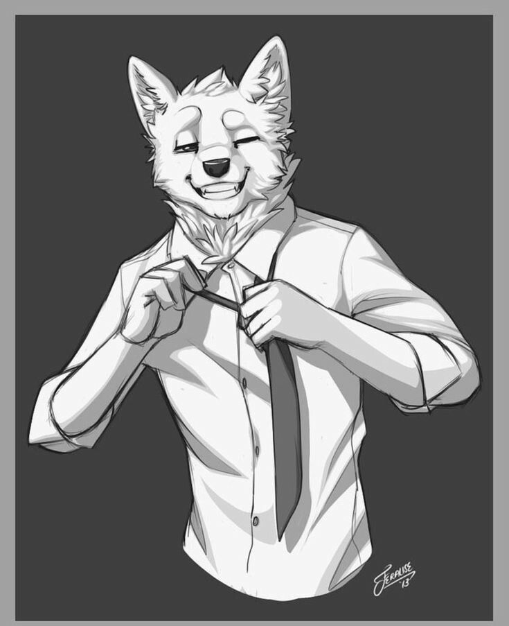

Bien! Par où commencer ? je me nomme BloodSkull Olk'Turakh. Blood pour faire court.Je suis un Orc de 40 ans. Je mesure un peu prêt 2m20 pour 130 Kg. Un gros morceau je vous l'accorde.
Je suis un mécano dans un gros concessionnaire pour des voitures de luxe, bricoleur et touche-à-tout, comme beaucoup d'orc. Et si j'écris c'est ligne c'est que mon psy ma demandée de le faire. Je vous avoue que j'ai eu une petite crise existentielle et que cela me permettra de me vider la tête.
J'habite à Megara, une ville de 2500 habitants perdus au milieu de la campagne de New Katay, le continent principal.j'ai une maison en haut d'un immeuble, avec une superbe vue. Je l'ai eu à prix d'or mais l'argent n'est pas un souci, je gagne bien ma vie.
Nous sommes le lundi 14 Août de l'an 2019 du calendrier de Katay.Je suis en train d'attendre le tram comme de coutume avec des écouteurs sur les oreilles. Je n'aime pas trop les gens, sont bruyants et souvent sont même plutôt casse-pieds, à toujours réclamer quelque chose, clope, argent. Je remarque qu'y a quelques gens malades, après en août avec la chaleur, cela me surprend pas trop mais je me tiens bien éloigner de ses nids à microbes.
J'arrive au garage et enfile mon bleu de travail et c'est partie pour bosser sur la Berling à papa gros richard. Encore un qui a trop forcé sur le moteur et me la abimer. J'aime bricoler, cela me permet de me concentrer sur rien d'autre.
Mon patron, un Renard blanc toujours bien sapé même quand il bricole, cela me dépasse par moments.

Surement le clodo qui la agressait ya 1 semaine qui a dû lui refile une saloperie.
Previsible.
Et il s'en va. Je déteste quand il fait ça!
Je travaille donc seul, mon binôme absent.
Le soir, je suis seul dans l'établir quand j'entends un des outils tomber par terre. Je me redresse. Ouuai je sais! classique d'un film d'horreur. Je prends une grosse clef à molette et vais voir ce qui fait ce raffut. Un gars qui cherche même pas à se camoufler, qui marche comme un bourré et qui s'est cassé la gueule en trébuchant sur ma caisse à roulette.
Il ne répond pas et se redresse.Je viens aider ce pauvre bougre, je le saisis pour le relever quand je vois sa gueule, toute arracher. Je vous laisse imaginer, un raton laveur, qui a la peau du museau arracher.
Merde! Je comprends qu'il soit dans cet état.
Je vais au bureau pour prendre le téléphone et appeler les urgences.
Je donne l'adresse et ils arriveront dans les 15 minutes.
Je ne sais pas quoi faire de lui, je vais donc essayer de le faire couché sur le canapé de notre salle de repos.
Il se dirige vers moi et je le couche sur le canapé, il émet des gargouillis peu rassurant.J'ai l'impression que 1 heure plus tard que les secours arrive. J'ai dû le maintenir, il n'a pas arrêté de vouloir se relever.
Sur le retour, je suis dans mes pensées, je ne fais pas très attention.Megara est une ville d'un peu après 5000 habitants. Pas trop peuplé d'humain mais on n'a rien contre.
La ville est un mixte entre du moderne et de l'ancien, les batiements sont en pierre ancienne.
La magie est encore présente mais désormais elle a une utilité utilitaire. Je ne suis pas sûr qu'on puisse encore faire des boules de feu comme à l'ancien temps. Disons qu'ont l'utilise plus comme un outil pour se faciliter la tâche.
Je tourne la tête pour justement voir à travers la fenêtre du bus, qui avance par magie , sans chauffeur, un policier ce lancer un sort de bouclier pare-balles a travers son bracelet au poignet. Surement une intervention houleuse.
Mon téléphone vibre, et je vois le nom s'afficher : ( 61) Thorin.
Thorin Ryakuda, un Raptor de 48ans,(18D50)un avocat de bonne réputation. Un ami d'enfance et on n'a clairement pas eu le même parcourt. Mais il a su rester humble. Il a sa petite famille à lui et parfois il aime bien décompresser avec moi.
Ambrosia, une raptoresse de 45 ans, (40D50)une infirmière qui bosse à l'hôpital de Megara, je pourrais ainsi lui parler de l'incident de ce soir.
Raptros, un raptor de 20 ans, un peu beaucoup efféminés mais très sympathiques, il est (46D50) le directeur du site culturel, Megara a des ruines de l'ancien temps qui en a fait sa réputation et Raptros est chargé de s'en occuper.
Et enfin Gardevoir, une femme plante, très mystique et fermer mais d'une gentillesse époustouflante, elle a 25 ans je crois et (14D50) elle est traductrice universelle. Elle possède une magie mentale capable de parler tous les langues parlées de toute créature vivante. Je vous avoue qu'elle m'impressionne.
Je raccroche après sa confirmation, le Lambo Jack est un vieux bar un peu western avec billard et fléchette. J'adore ce bar.